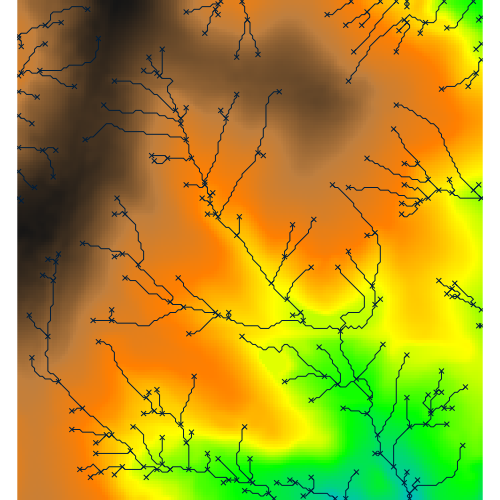
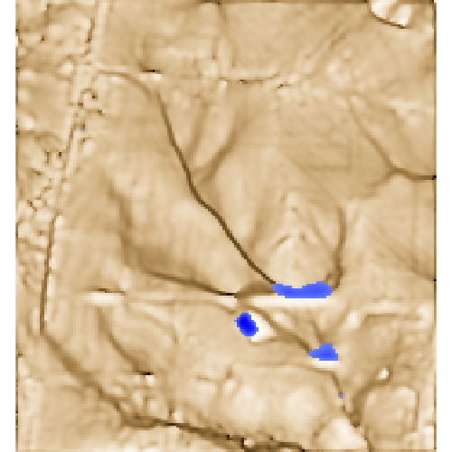
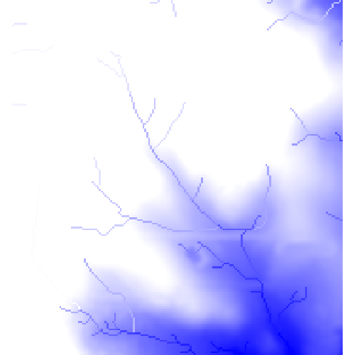
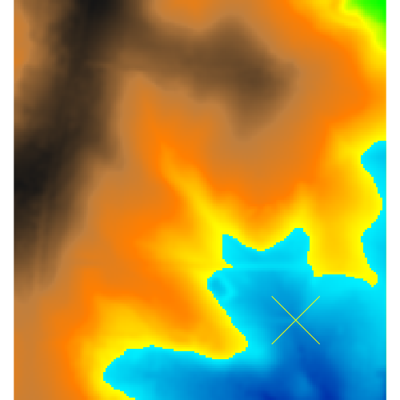
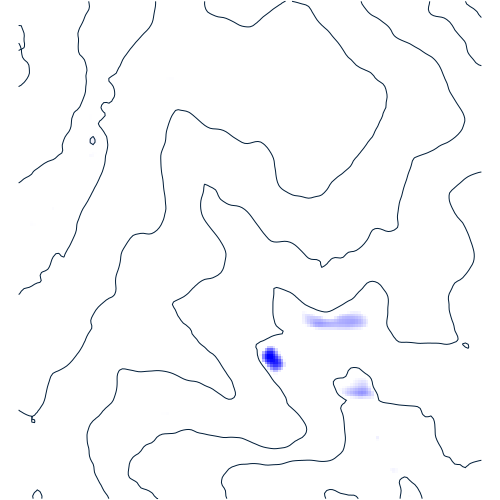
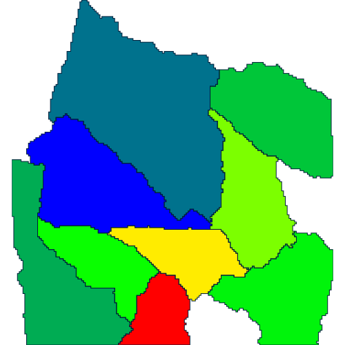
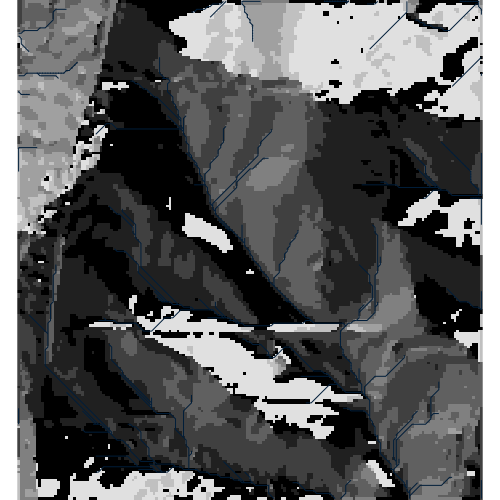
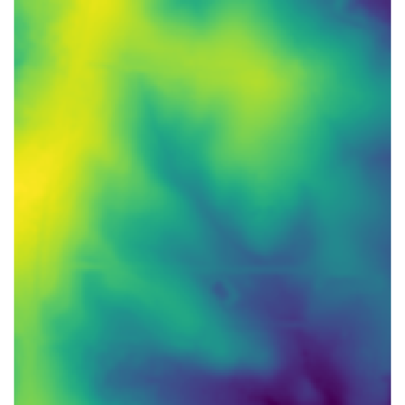

Created by Truffaut Harper.
Change topography and observe how streams on the landscape change.

Created by Jenna Abrahamson.
Change topography and observe changes in topographic wetness index and ponding.

Created by Rebecca C.
Make lake and streams using elevation and adding color.

Created by Mark Feinberg.
The water level of the lake directly changes with the elevation of the cell. The lake's water level is 5m higher than the cell's elevation to simulate flooding. Change the elevation to see how the lake's water level changes in response.

Created by Emma Butzler.
Change topography and observe where ponds are located and contour lines.

Created by Jamie Huerta.
Hydrology and watershed.

Created by Owen Smith.
Change topography and observe drainage directions change

Created by Eli Horner.
Change topography and observe changes in solar radiance, radiation, and shadows
